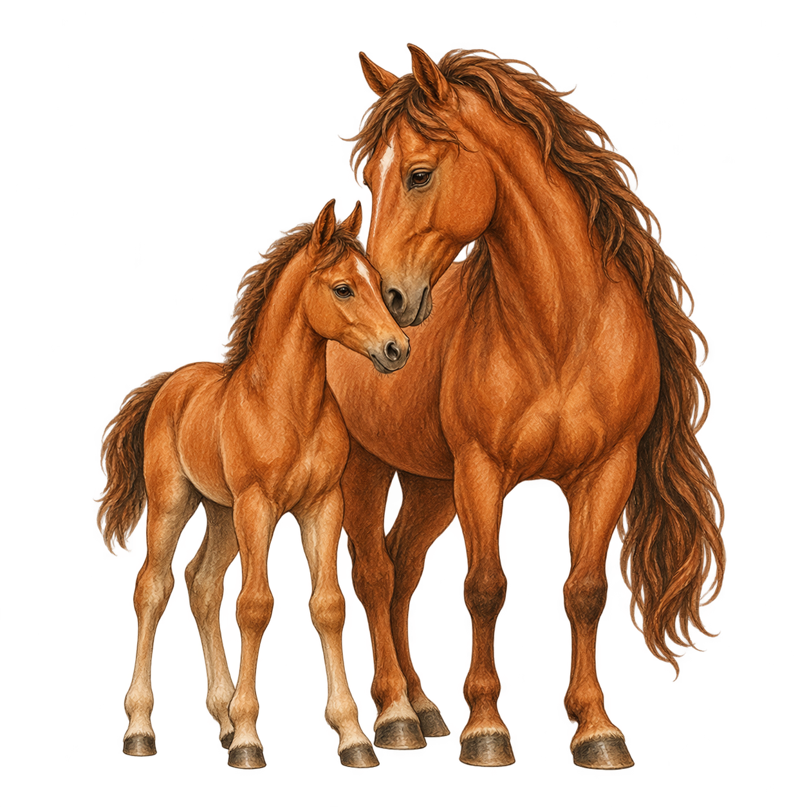

Rossmarkt-Kreuzungsmatrix
Hochblut
Ceffyl Brycing
Pferde Alerias · Archivblatt Z-01
Nachzuchten berechnen, Blutlinien benennen und ihre Anlagen durch Owain Draig deuten lassen.

Zuchtarchiv„Zwei Blutlinien geben das Versprechen. Erst das Fohlen gibt die Antwort.“Owain Draig
Nachzucht-Rechner
Wähle Stute und Hengst. Das Zuchtbuch übernimmt ihre sechs Rossmarktwerte, mittelt Lebensspanne und Marktwert und würfelt die natürliche Streuung des einzelnen Fohlens aus.
Lokales Gestütsbuch
Gespeicherte Fohlen und eigene Kreuzungsnamen bleiben in diesem Browser erhalten.
Noch wurde kein Fohlen eingetragen.
Überlieferte und gefestigte Linien
Die fünf Namen der alten Rossmarkt-Matrix werden durch die zwei eindeutig belegten Zuchtlinien Brycing und Tirashan ergänzt.
Rossmarkt-Kreuzungsmatrix
Ceffyl Brycing
Rossmarkt-Kreuzungsmatrix
Cuanach Brycing
Rossmarkt-Kreuzungsmatrix
Hest Brycing
Rossmarkt-Kreuzungsmatrix
Hest Ceffyl
Gefestigte Linie: RhyfelAus dieser Verbindung ging später die gefestigte Rhyfel-Linie hervor.Rossmarkt-Kreuzungsmatrix
Sale Ceffyl
Pferdedossier Brycing
Cyning Drake
Die gefestigte Hochzucht vereint die Kraft des Cyning mit der kampferprobten Eleganz des Drake.Pferdedossier Tirashan
Curragh Hest
Die gefestigte Linie verbindet die Waldgängigkeit des Curragh mit der Robustheit des Hest.27 Rassen · 351 mögliche Paare
Die Matrix ist symmetrisch: Eine bekannte Kreuzung gilt unabhängig davon, welche Rasse als Stute oder Hengst gewählt wird. Ein Klick auf eine Zelle übernimmt das Paar in den Rechner.